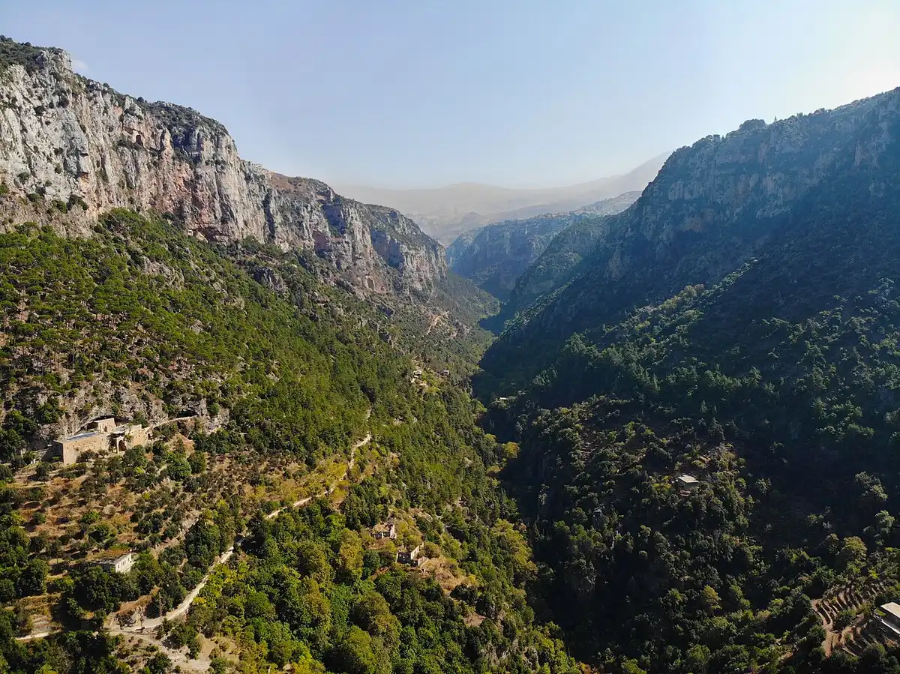

منصلّب إيدنا على وجهنا
Translation: We sign ourselves with the cross, our hand upon our face.
From the mountain villages of Akoura, Tannourine, and Bsharri - the Lebanon that raised Saint Charbel - come popular prayers that families have said for generations: at dawn, before work, over the house and the fields. They are the people's prayer, in the people's Arabic.

These are traditional Lebanese popular prayers - oral devotion passed down in mountain families, not official liturgical texts of the Church. They were shared by Anthony El Hachem on Facebook, and we link his original rather than re-uploading it.
Like every popular devotion, they are a way people ask - with trust, in their own dialect. They carry no promise of guaranteed results, and they sit alongside the Church's prayer, never in its place.
Excerpt - full text coming. Only the confirmed lines are published below. A few lines of the source recording are still being transcribed and checked, and we do not guess at missing words. When the full text is verified, this page will be completed and this note removed.
The original mountain Arabic first, then a labeled translation. The translations are working translations of a living dialect, offered so every reader can follow the prayer's meaning.
منصلّب إيدنا على وجهنا
Translation: We sign ourselves with the cross, our hand upon our face.
ربي وإلهي، أنا خافك. خاف اللي خافك، خاف اللي ما بيخافك.
Translation: My Lord and my God, I stand in awe of You. The one who fears You was afraid; the one who does not fear You was afraid. (Literal wording; the intended dialectal meaning needs review.)
السماء والأرض مملوءة من مجدك العظيم. التسبيح لك، القوة لك، العز لك، المجد لك.
Translation: Heaven and earth are filled with Your great glory. Praise is Yours, power is Yours, honor is Yours, glory is Yours.
المي بمجراها، والحيات بوكراها، وجميع الملائكة والقديسين على كراسيها.
Translation: The water runs in its course, the serpents rest in their dens, and all the angels and saints are at their thrones.
قومي يا نفسي، يا خاطية، يا شقيّة، يا تايهة، يا رديّة، يا كسلانة، سبّحي ربّك ومجّديه.
Translation: Rise, O my soul - sinful, wretched, lost, straying, lazy soul - praise your Lord and glorify Him.
Anthony El Hachem shared these prayers in a Facebook reel, naming the villages of Akoura, Tannourine, and Bsharri. The mountains of northern Lebanon - the Qadisha Valley, the Cedars, the hermitages - are the cradle of Maronite prayer, and the mountains that raised Saint Charbel.
These mountains gave the Church Saint Charbel. Walk further into their prayer.